1900 - 1940: Accidental Creation
The Salton Sea was formed in 1905 when the Colorado River breached an irrigation canal, flooding the basin. Initially, it became a habitat for migratory birds and a thriving ecosystem.
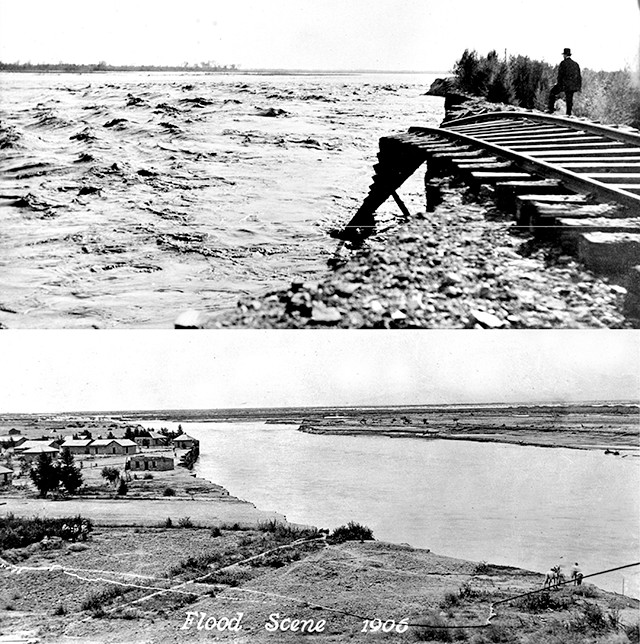 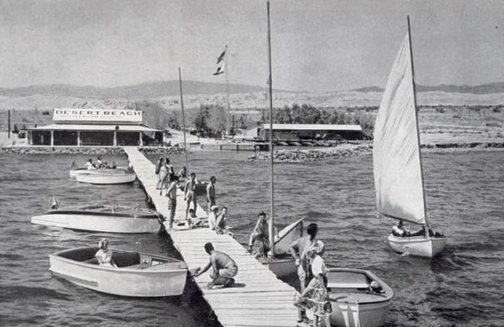 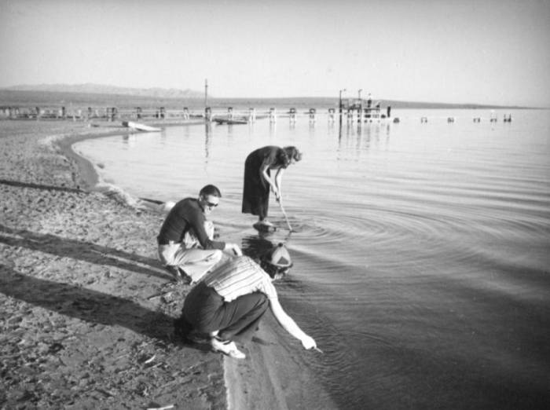1940 - 1980: A Tourist Paradise
During the mid-20th century, the Salton Sea flourished as a tourist destination, featuring resorts, fishing spots, and recreational boating. Celebrities and vacationers flocked to its shores, unaware of the looming ecological threats.
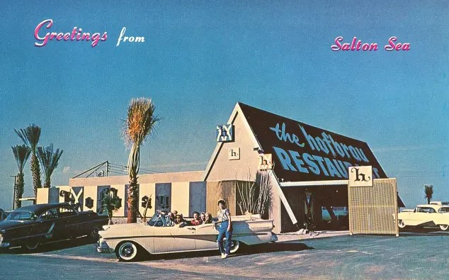 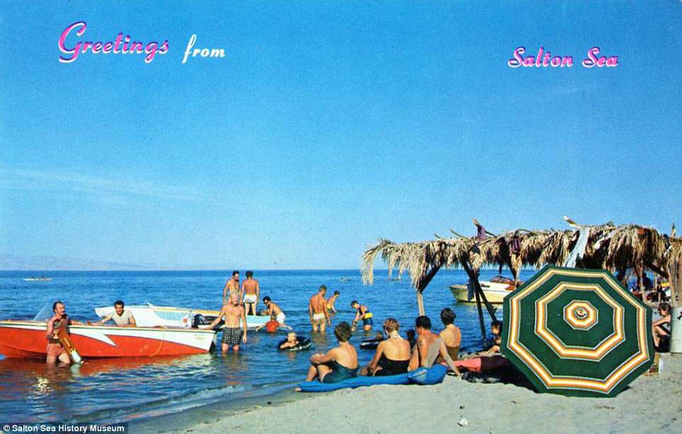 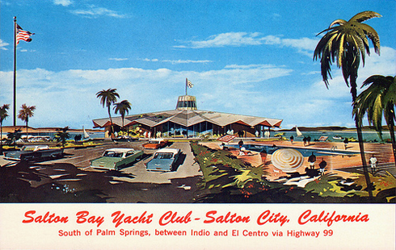 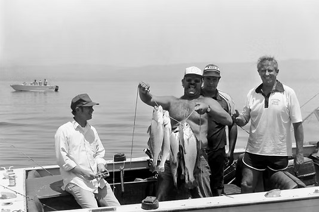1980 - Present: Environmental Collapse
As agricultural runoff increased salinity and pollution levels, the ecosystem began to deteriorate. The once-thriving fish population collapsed, and massive bird die-offs followed. Today, the Salton Sea faces continued decline, with toxic dust storms impacting nearby communities.
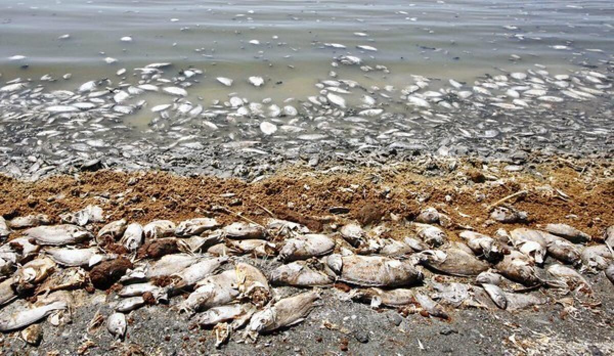 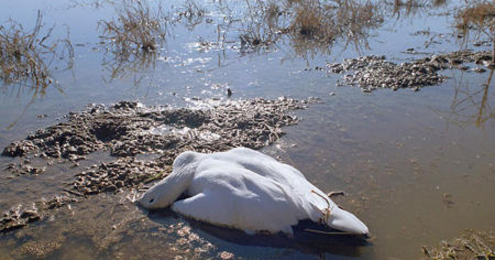 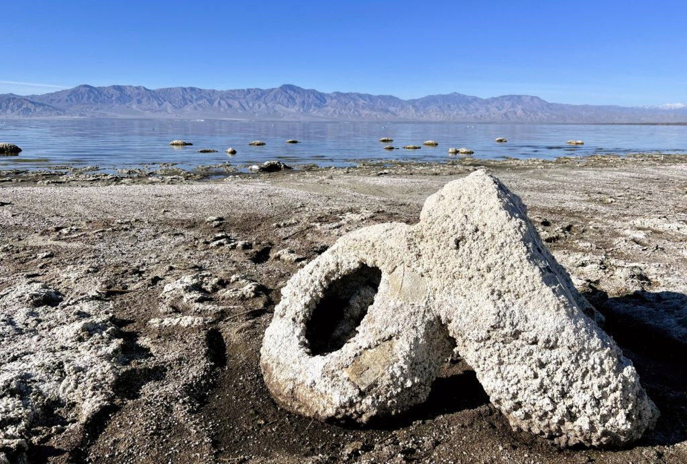 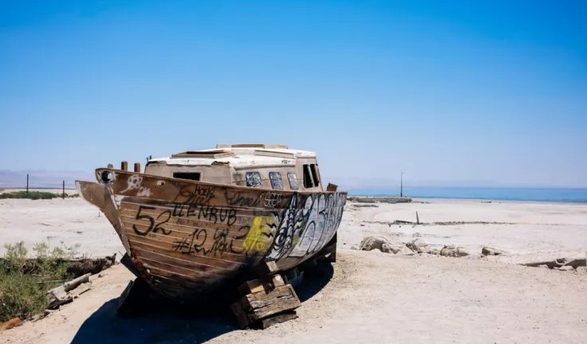 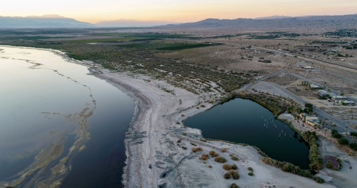